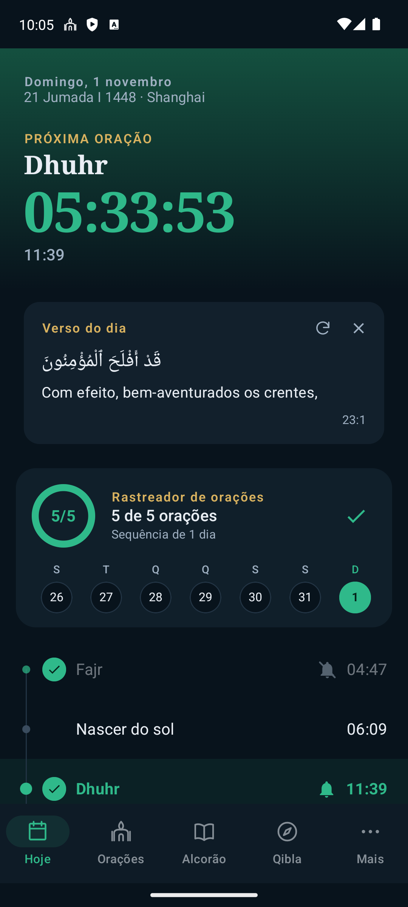
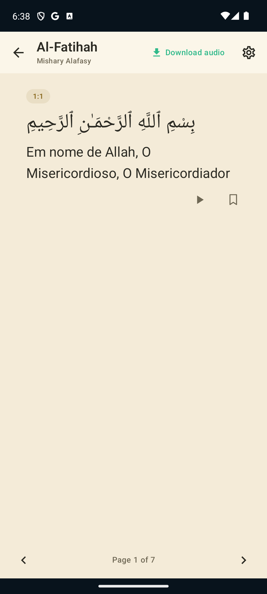
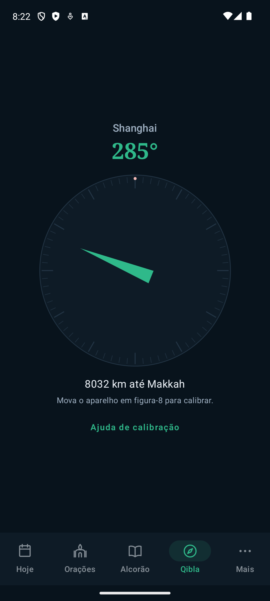
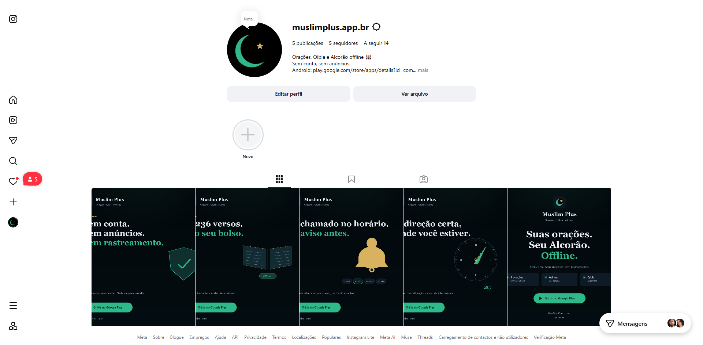
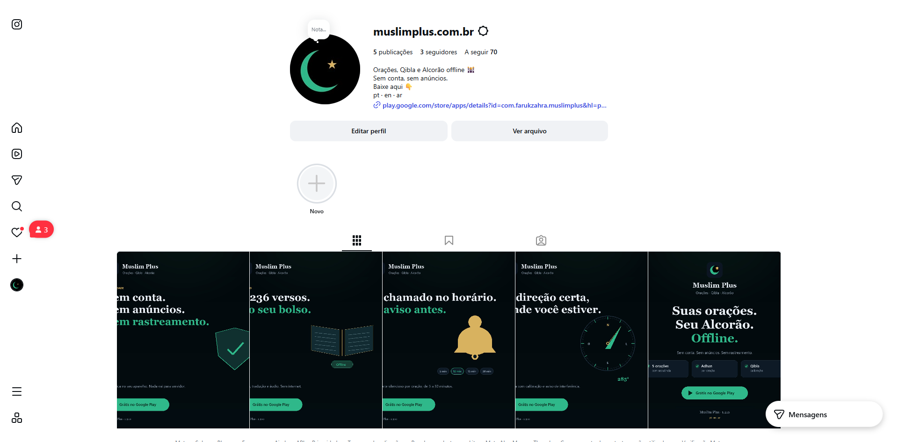
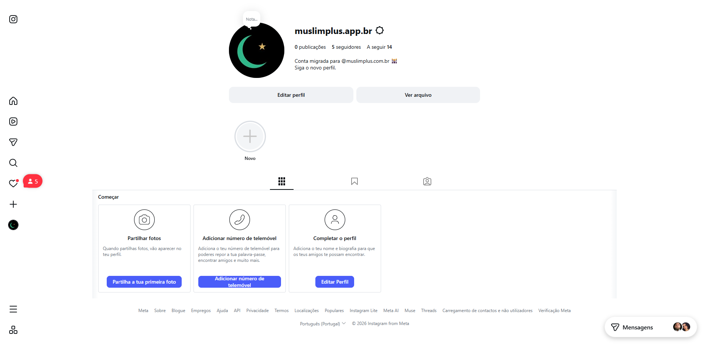
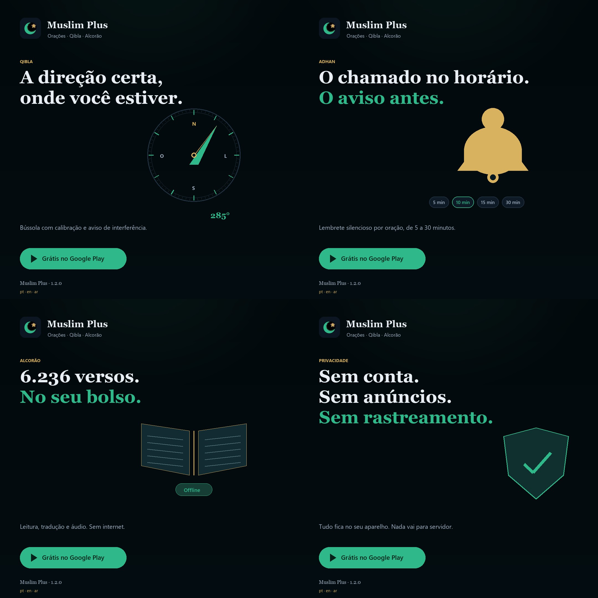
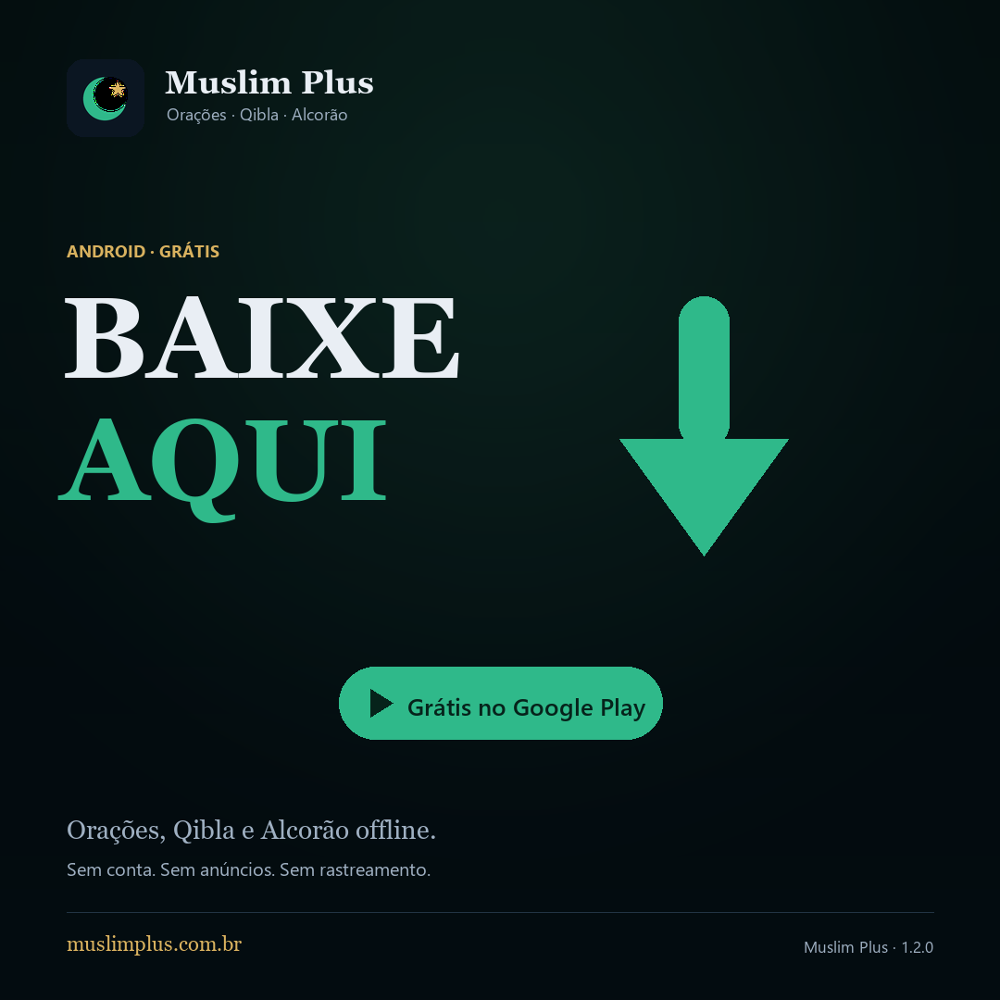
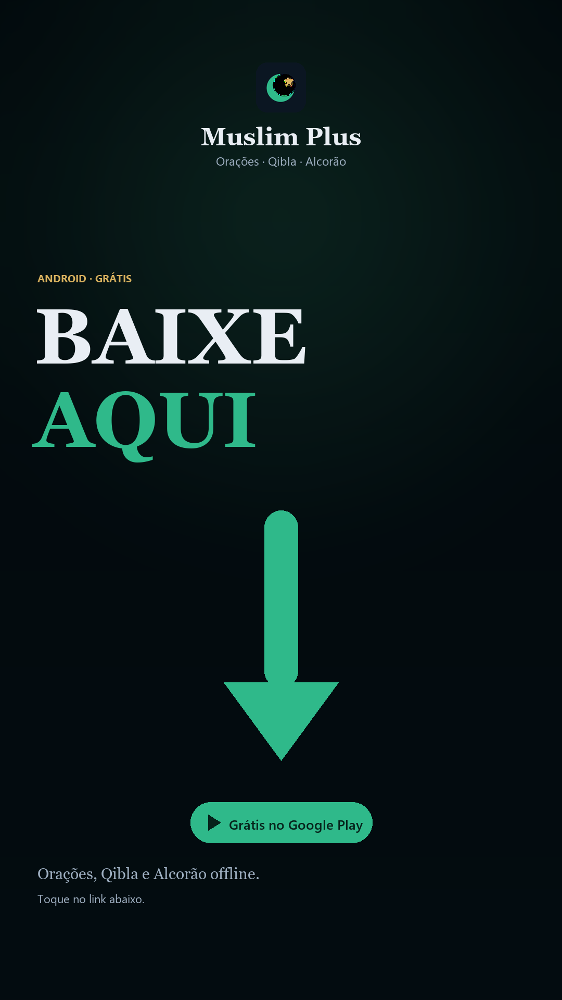

Você pediu para implementar todas as sugestões P0, rodar os E2E, publicar a 1.2.0, criar o Instagram do app, migrar para o .com.br, produzir anúncios e colocar um site na VPS. Este recap mostra o que foi entregue, com prints, e o que ainda depende de você.
1.2.0 no Play181 testes JVM30 E2E5 posts no Instagramsite 200 no subdomínio0/0 vistos
Sitemuslimplus.faruk.dev.br no ar · muslimplus.com.br em transição de DNS
Instagram@muslimplus.com.br · 5 posts · link no perfil
App1.2.0 · interno e produção no Google Play
Clique em um card para marcar como visto.
Feito
Pesquisa do Muslim Pro e plano P0
Pedido
Comparar o Muslim Pro com o Plus e transformar cada sugestão em uma task.
Entregue
Muslim Pro 17.10.1 instalado pela Play Store e usado como visitante.
Relatório em docs/research/2026-10-31-muslim-pro-17.10.1.md.
Spec e plano em docs/superpowers/{specs,plans}/2026-10-31-p0-experience-parity.md.
Feito + ajuste seu
Hoje acionável
Pedido
Checklist das cinco orações. Depois você pediu para a linha inteira marcar e o verso do dia subir.
Entregue
Anel 5/5, semana, sequência, marcar todas e check por oração.
Linha inteira marca; o sino só liga/desliga o adhan.
Verso do dia acima do rastreador.

Hoje com rastreador e lista
Feito
Adhan por oração e lembrete
Pedido
Silencioso por oração e aviso antes do chamado.
Entregue
Lembrete de 5, 10, 15 ou 30 minutos, silencioso e separado do adhan.
Nove vozes mantidas; o sino do Hoje usa a mesma preferência.
Feito
Alcorão: setup, progresso e leitor
Pedido
Setup de tradução/meta, abas, temas, modo Página e mini-player.
Entregue
Wizard de três passos, abas Leitura e Progresso.
Temas Moderno/Papel/Escuro, quatro fontes, tela ligada.
Mini-player com anterior/próximo e velocidade.

Leitor Papel, modo Página
Feito
Qibla e onboarding
Pedido
Confiança na bússola e um onboarding mais claro.
Entregue
Precisão do sensor, aviso de interferência e ajuda de calibração.
“De frente para Makkah” com tolerância de 5°.
Cartões de permissão e privacidade no onboarding.

Qibla em português
Feito
Versão 1.2.0 publicada
Pedido
Rodar tudo, publicar e avisar os beta testers.
Entregue
181 testes JVM, 30 instrumentados, lint e build verdes.
AAB versionCode 7 assinado e enviado aos tracks interno e produção.
Notas em en-US e pt-BR; mensagem de WhatsApp em docs/releases/1.2.0.md.
Feito · conta antiga pendente
Instagram do app, agora no .com.br
Pedido
Criar o perfil, deixar tudo preenchido, publicar e migrar para o domínio .com.br.
Entregue
@muslimplus.com.br com avatar preto, bio “Baixe aqui 👇” e link do Google Play no campo Site.
5 posts com arte 1080×1080 e legendas sem iPhone.
@muslimplus.app.br aposentado: 0 posts e bio apontando para o .com.br.
A conta .app ainda não foi excluída: o site pede a senha atual do centro e as do cofre foram recusadas.

5 posts no .com.br

Bio e link clicável

.app aposentado
Feito
Quatro anúncios e o CTA “Baixe aqui”
Pedido
Mais quatro anúncios diferentes e um ícone “Baixe aqui” com seta para baixo, sem iPhone.
Entregue
Posts de Qibla, adhan, Alcorão e privacidade, todos quadrados.
CTA em três formatos: quadrado, story e ícone 512.
Textos e geradores em docs/instagram/ e tools/instagram/.

4 anúncios

CTA quadrado

Story com espaço para o link
No ar no subdomínio
Site novo na VPS
Pedido
Fazer um site e publicar na sua VPS, no domínio muslimplus.com.br.
Entregue
Landing com hero, seis recursos, prints reais, privacidade, FAQ e CTA.
Publicado em /opt/muslimplus na VPS; Caddy com bloco para o .com.br.
https://muslimplus.faruk.dev.br/ responde 200, com imagens e privacidade.
A zona DNS do .com.br foi salva (A apex e www → 92.112.177.249), mas o Registro.br está em transição de nameservers.